2:33:28 · 46 OPERE
Seminario tematico: l'industria culturale e le sue piaghe.
Il filo del discorso
Il seminario prende avvio da una critica del prestigio accademico e mediatico, inteso da Dr Divago come possibile sostituto del giudizio personale. I cliché studiati da Lifton, la Psicologia delle folle e il concetto adorniano di industria culturale forniscono la cornice di una discussione a più voci: quando un’etichetta chiude il confronto e quando un’autorità può essere sottoposta a verifica?
Leggi la sintesi completaRiduci la sintesi
La biografia di Derek Parfit scritta da David Edmonds e una conferenza alla Oxford Union introducono il nucleo filosofico. I partecipanti discutono l’aiuto ai poveri, l’identità personale e la continuità psicologica di Ragioni e persone. Dr Divago contrappone agli esperimenti mentali di Parfit il rapporto fra condotta e pensiero, la tradizione socratica e l’idea di anima; contesta inoltre il passaggio da ipotesi narrative a spiegazioni dell’essere umano. Sono sue obiezioni e interpretazioni, non una confutazione già acquisita delle tesi di Parfit. Gli interventi collegano poi Adorno, la libertà di ricerca, la formazione del pubblico e l’autonomia del cittadino. Romanzi, cinema e testimonianze storiche diventano esempi di riduzione della persona a prodotto oppure di resistenza: il finale di Anna Seghers, Rohde, Frankl, Primo Levi ed Elie Wiesel accompagnano una riflessione sul senso e sulla responsabilità. La chiusa torna alla possibilità individuale di opporsi e di scegliere. I giudizi politici e religiosi, le accuse all’accademia e le analogie con nazismo, pandemia e disagio psichico restano attribuiti agli interlocutori; la scheda non li trasforma in diagnosi o fatti dimostrati.
I libri nel discorso

Thought Reform and the Psychology of Totalism. A Study of “Brainwashing” in China
Identificazione probabile
Note sul riferimento
Copertina: University of North Carolina Press · ristampa 1989 con nuova prefazione
Copertina autentica scaricata dal servizio immagini collegato direttamente al catalogo UNC Press per ISBN 9780807842539. Titolo completo, autore e nuova prefazione sono visibili. Si distingue la ristampa cartacea 1989 dalla prima Norton 1961 e dall’ebook 2012 ISBN 9780807882887; quest’ultimo ISBN non è assegnato all’immagine cartacea. Immagine conservata intera.
Lifton e thought-terminating clichés sono richiamati; identificazione probabile del trattato dalla descrizione del lavaggio del cervello in Cina.

Politica
Identificazione probabile
Note sul riferimento
Copertina: Bompiani · Testi a fronte, 2016 · a cura di Federico Ferri
Immagine autentica dell’opera, controllata visivamente; l’edizione di riferimento non è attribuita al filmato.
Animale politico e connessione fra cognizione e polis: richiamo probabile alla Politica, non titolo pronunciato.

Il Principe
Note sul riferimento
Copertina: Feltrinelli · 2013 · a cura di Ugo Dotti
Immagine autentica dell’opera, controllata visivamente; l’edizione di riferimento non è attribuita al filmato.
Il Principe e De principatibus sono nominati nella digressione sulla trasformazione della forma politica.
Rousseau’s Dog: A Tale of Two Great Thinkers at War in the Age of Enlightenment
Note sul riferimento
Copertina di un’edizione della stessa opera: Faber, edizione paperback 2007 distribuita da Hachette India, ISBN 9780571224067. Titolo esteso leggibile sulla copertina; stessa opera, non edizione italiana né copia video identificata.
Titolo Rousseau’s Dog e autore Edmonds sono pronunciati nella ricognizione bibliografica iniziale; Eidinow è coautore verificato presso il distributore editoriale.
Rousseau’s Dog è nominato nella breve bibliografia di David Edmonds; John Eidinow è coautore verificato.
Parfit: A Philosopher and His Mission to Save Morality
Note sul riferimento
Copertina di un’edizione della stessa opera: Princeton University Press, 2023, ISBN 9780691225234. Copertina della stessa biografia; nessuna tiratura specifica del video certificata.
David Edmonds e biografia di Parfit sono espliciti a 841–867 s; la valutazione promozionale della quarta di copertina è oggetto della polemica, non un giudizio fatto proprio dalla scheda.
Biografia di Parfit di David Edmonds e giudizio della quarta di copertina espliciti; la biografia è il punto di partenza della discussione.

Derek Parfit – Full Address (Oxford Union)
Identificazione probabile
Note sul riferimento
Copertina: Miniatura originale del video ufficiale Oxford Union, pubblicazione online 10 ottobre 2015
Immagine autentica fornita dal canale: Parfit davanti al leggio nell’aula della Oxford Union. Miniatura documentaria del video, non copertina di libro o prova delle valutazioni polemiche. Non ricostruisce graficamente il suo aspetto e non stabilisce il giorno dell’incontro.
Oxford Union 2015, Parfit e l’intervento sulla povertà espliciti; corrispondenza probabile con il video ufficiale Full Address. Anno di pubblicazione distinto da giorno dell’incontro.

Reasons and Persons
Note sul riferimento
Copertina: Oxford University Press, ISBN 9780198249085: prima edizione paperback corretta 1986; tiratura dell’immagine non certificata, opera originaria 1984
Copertina autentica fornita da OUP: titolo, autore e veduta veneziana leggibili. È l’edizione paperback della stessa opera, non la prima edizione rilegata del 1984; la copia usata nel seminario non è identificata.
Ragioni e persone è nominato da un partecipante e discusso estesamente per identità e continuità psicologica; stessa opera di Reasons and Persons, non nuova traduzione creata.

Vite e dottrine dei più celebri filosofi
Note sul riferimento
Copertina: Bompiani, Il pensiero occidentale, novembre 2005, 1824 pagine. A cura di Giovanni Reale, con Giuseppe Girgenti e Ilaria Ramelli, testo greco a fronte.
Immagine autentica dell’opera, controllata visivamente; l’edizione di riferimento non è attribuita al filmato.
Vita dei filosofi di Diogene Laerzio nominata nel rapporto fra pensiero e condotta.
Sofista
Identificazione probabile
Note sul riferimento
Copertina: Einaudi · Piccola Biblioteca Einaudi Nuova serie 402, 2008 · cura e traduzione Bruno Centrone
Immagine autentica dell’opera, controllata visivamente; l’edizione di riferimento non è attribuita al filmato.
Parricidio di Parmenide: probabile riferimento al Sofista 241d; non titolo esplicito, nessun dialogo ulteriore ricavato da soli nomi.

Perché non possiamo non dirci «cristiani»
Note sul riferimento
Copertina: Historica, 2022, a cura di Corrado Ocone; ristampa successiva al saggio originale.
Immagine autentica dell’opera, controllata visivamente; l’edizione di riferimento non è attribuita al filmato.
Croce e Perché non possiamo non dirci cristiani sono nominati; il relatore propone una propria riformulazione in termini occidentali.

Psicologia delle folle
Note sul riferimento
Copertina: Apogeo · 2025 · nuova traduzione dell’edizione integrale originale
Immagine autentica dell’opera, controllata visivamente; l’edizione di riferimento non è attribuita al filmato.
Le Bon, l’anno 1895, Psicologia delle folle e il tema del prestigio sono espliciti.

Risposta alla domanda: che cos’è l’Illuminismo?
Note sul riferimento
Copertina della raccolta che comprende il saggio sull’Illuminismo: Firenze University Press · Sette scritti politici liberi · 2011 · a cura di Maria Chiara Pievatolo
Copertina del volume cartaceo FUP che comprende il saggio, riscontrato dal catalogo universitario. L’ISBN appartiene alla raccolta; il filmato non annuncia un’edizione e il titolo del saggio è un’identificazione probabile della citazione.
Che cos’è l’Illuminismo e Sapere aude sono richiamati a proposito dell’autonomia del giudizio.
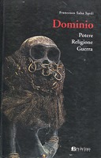
Dominio. Potere, religione, guerra
Note sul riferimento
Copertina di un’edizione della stessa opera: Francesco Bevivino Editore, 2004, ISBN 9788888764283. Copertina dell’esemplare descritto da Libreria Ossidiane.
Saba Sardi e Dominio/Potere/Religione espliciti nel contributo di un partecipante a 3418–3468 s; completamento del sottotitolo riscontrato nel catalogo bibliotecario. Le ipotesi sul dominio restano dell’interlocutore e dell’autore citato.
Saba Sardi e Dominio/Potere/Religione richiamati da un partecipante; sottotitolo completo riscontrato nel catalogo bibliotecario.
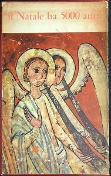
Il Natale ha 5000 anni
Identificazione probabile
Note sul riferimento
Copertina fotografata (copia dichiarata Sugar 1958): Fotografia della copia Librodifaccia, scheda AbeBooks31972339256, dichiarata Sugar 1958. Autore, editore e anno sono dati della scheda della medesima copia, non iscrizioni leggibili nella foto.
Edizione illustrativa dichiarata Sugar 1958; copia del video ignota. Non confusa con la successiva Bevivino o con altre edizioni, né con una raccolta diversa; nessuna fusione di ISBN o paginazioni. Autore e anno non visibili nell’immagine. Frontespizio e colophon non sono documentati.
Saba Sardi e il titolo Natale a 5.000 anni sono riconoscibili in due passaggi consecutivi. Titolo riconoscibile ma forma nella trascrizione automatica imperfetta; il richiamo è del partecipante, senza anno, editore o ISBN pronunciati.
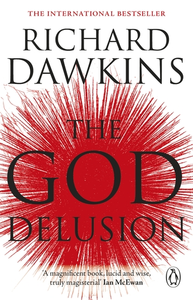
The God Delusion
Note sul riferimento
Copertina: Transworld Digital · ebook · 2009
Copertina ufficiale dell’ebook Transworld Digital del 2009. L’ISBN si riferisce all’edizione digitale; il supporto e l’edizione mostrati nel video non sono stati accertati.
The God Delusion è esplicito; il successivo racconto di un’intervista non viene trattato come una citazione collazionata del libro.

Culture Industry Reconsidered
Note sul riferimento
Copertina della raccolta The Culture Industry che contiene il saggio: Copertina della raccolta The Culture Industry: Selected Essays on Mass Culture, a cura di J. M. Bernstein, Routledge Classics, 2001; prima edizione della raccolta 1991. ISBN 9780415253802. Il catalogo bibliotecario descrive viii,210 pagine; il catalogo attuale dell’editore indica 224 pagine. Non è una copertina autonoma del singolo saggio.
L’indice Routledge conferma Culture Industry Reconsidered. L’ISBN appartiene alla raccolta inglese; non si attribuisce questa edizione al filmato.
Un partecipante cita il testo del 1963 e il passo sulla debolezza dell’io: corrispondenza con Culture Industry Reconsidered, presente nella raccolta già dichiarata. È il saggio discusso, non un nuovo volume autonomo.

Star Trek: The Original Series
Note sul riferimento
Immagine ufficiale della serie · Kirk e Spock: Immagine promozionale ufficiale di Star Trek.com: Kirk e Spock davanti al Guardian of Forever. È un fotogramma usato dalla pagina della serie, non una copertina libraria, una locandina d’epoca o l’episodio a cui attribuire l’esperimento inventato dal relatore.
Immagine autentica dell’opera, controllata visivamente; l’edizione di riferimento non è attribuita al filmato.
Star Trek, il teletrasporto e la serie televisiva degli anni Sessanta sono richiamati esplicitamente. Non sono identificati singoli episodi.
A Confederacy of Dunces
Identificazione probabile
Note sul riferimento
Copertina di un’edizione della stessa opera: LSU Press, edizione rilegata 2014, ISBN 9780807159606. Copertina della stessa opera; la prima pubblicazione del romanzo è del 1980.
Titolo inglese deformato dalla trascrizione automatica, resa Confederazione degli sciocchi, autore reso come un Toole e citazione di Swift consentono identificazione probabile; non si crea una raccolta di Swift dal solo motto.
Nei passaggi citati compaiono il titolo inglese deformato, la resa Confederazione degli sciocchi e il richiamo a Swift. Identificazione probabile del romanzo di Toole, non una raccolta di Swift; nessuna edizione del video accertata.
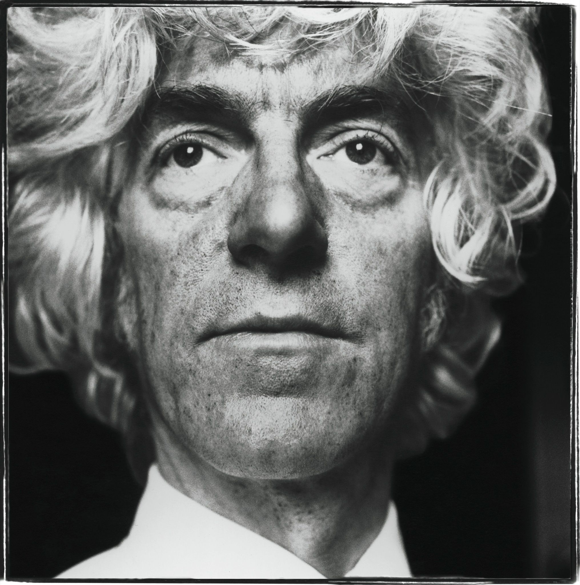
How To Be Good
Identificazione probabile
Note sul riferimento
Fotografia Steve Pyke / Getty pubblicata nell’articolo, non facsimile: The New Yorker: pubblicazione online 29 agosto 2011, fascicolo del 5 settembre 2011. Fotografia di Steve Pyke / Getty pubblicata specificamente nell’articolo, non copertina, frontespizio o facsimile di pagina.
Titolo non pronunciato: identificazione per collazione del profilo New Yorker 2011, dell’esperimento dei fratelli e del passo sui novizi tibetani. Articolo distinto da Strangers Drowning 2015 e dal romanzo omonimo di Nick Hornby.
Titolo non pronunciato. L’articolo New Yorker 2011 è identificato mediante l’esperimento dei fratelli e il successivo passo sui novizi; distinto dai libri di MacFarquhar e Hornby.
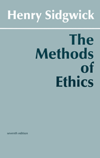
The Methods of Ethics
Note sul riferimento
Copertina di un’edizione della stessa opera: Hackett, 1981, ristampa integrale della settima edizione 1907, ISBN 9780915145287; prefazione di John Rawls. Opera originaria 1874, non edizione identificata nel filmato.
Titolo, Henry Sidgwick e 1874 sono espliciti a 5550–5578 s. La scheda dell’edizione non conferma la qualificazione orale di Parfit come curatore: John Rawls è autore della prefazione, non coautore del trattato.
Henry Sidgwick, Methods of Ethics e prima edizione 1874 espliciti. Non confermata l’attribuzione di una curatela a Parfit nell’edizione qui illustrata.

L’ideologia del lupo
Note sul riferimento
Copertina: Presentazione dell’autore, 2024
Il relatore richiama il proprio libro L’ideologia del lupo e un passo relativo a Fromm.

They Thought They Were Free: The Germans, 1933–45
Note sul riferimento
Copertina: Copertina della edizione inglese ampliata University of Chicago Press 2017, con postfazione di Richard J. Evans, ISBN 9780226525839. Il catalogo corrente indica 384 pagine, mentre una pagina di estratto ne indica 368; la differenza non identifica la precisa tiratura del filmato. Prima pubblicazione 1955. La traduzione orale del titolo non dimostra una edizione italiana specifica.
Titolo e autore leggibili sulla copertina originale del sito editoriale; Evans è autore della postfazione, non coautore della inchiesta 1955.
Milton Mayer e They Thought They Were Free espliciti; il resoconto delle interviste è argomento del relatore, non diagnosi dei tedeschi come gruppo.
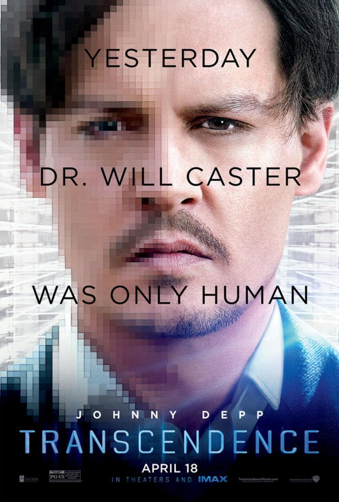
Transcendence
Note sul riferimento
Locandina del film dal produttore Alcon: Locandina autentica distribuita dal produttore Alcon Entertainment, con Johnny Depp, titolo e uscita cinematografica 18 aprile. Non copertina di libro né fotogramma del seminario.
Titolo, attore Johnny Depp e tema del trasferimento della coscienza sono espliciti a 6101–6127 s; la trama fantascientifica non è una dimostrazione sperimentale.
Transcendence, Johnny Depp e trasferimento della coscienza in un computer espliciti; il film resta fantascienza.
Das siebte Kreuz. Roman aus Hitlerdeutschland
Identificazione probabile
Note sul riferimento
Copertina di un’edizione della stessa opera: Aufbau Taschenbuch, 2018, ISBN 9783746634692, postfazione Thomas von Steinaecker. Copertina autentica del romanzo, non di una poesia autonoma o della prima edizione 1942.
Il relatore annuncia una poesia di Anna Seghers a 6564–6584 s, ma il passo tradotto coincide con il finale del romanzo Das siebte Kreuz. Titolo non pronunciato, menzione probabile e genere corretto sulla fonte primaria.
Passo introdotto oralmente come poesia di Anna Seghers, ma collazionato con il finale di Das siebte Kreuz. Romanzo identificato probabilmente, nessuna poesia autonoma.

Psyche. Seelencult und Unsterblichkeitsglaube der Griechen
Note sul riferimento
Copertina: Encre Marine / Les Belles Lettres · traduzione francese 2017
Copertina autentica della versione francese Psyché. Le culte de l’âme chez les grecs et leur croyance à l’immortalité, distribuita dall’editore Les Belles Lettres, 21 marzo 2017. L’opera è di fine Ottocento; questa traduzione non viene attribuita al video.
Rohde, titolo Psyche e tema greco dell’anima sono riconoscibili; il conteggio orale delle pagine non identifica un’edizione.

Odissea
Identificazione probabile
Note sul riferimento
Copertina: Einaudi · ET Classici · 2014
Copertina autentica controllata visivamente. Edizione di riferimento, non identificata come quella usata nel video.
Allusione al dialogo con Achille nell’aldilà, Odissea XI: titolo e autore non pronunciati, menzione probabile.

Su verità e menzogna in senso extramorale
Note sul riferimento
Copertina: Adelphi · Biblioteca minima 66, 2015 · traduzione di Giorgio Colli
Immagine autentica dell’opera, controllata visivamente; l’edizione di riferimento non è attribuita al filmato.
Titolo Verità e menzogna in senso extramorale esplicito; cognome deformato nella trascrizione automatica.
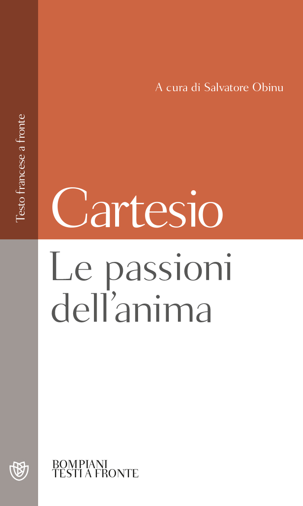
Le passioni dell’anima (Les Passions de l’âme)
Note sul riferimento
Copertina di un’edizione della stessa opera: Bompiani, testo francese a fronte a cura di Salvatore Obinu, 2003, ISBN 9788845292194; non edizione identificata nel video.
Titolo e Cartesio espliciti a 7263–7274 s, con richiamo a Elisabetta; distinto dalla biografia romanzata di Freud nominata subito dopo.
Le passioni dell’anima di Cartesio nominato con richiamo a Elisabetta; distinto dalla biografia romanzata di Freud.
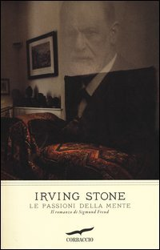
Le passioni della mente. Il romanzo di Sigmund Freud
Identificazione probabile
Note sul riferimento
Copertina di un’edizione della stessa opera: Corbaccio, 2012, ISBN 9788863805109, traduzione di Sergio Varini. Copertina fornita dalla libreria universitaria Vita e Pensiero; la copia del filmato non è identificata.
Titolo Le passioni della mente e soggetto Freud espliciti, autore non pronunciato: attribuzione a Irving Stone riscontrata nel catalogo bibliotecario e nell’edizione Corbaccio; menzione probabile, non trattato clinico di Freud.
Le passioni della mente come biografia di Freud: autore non pronunciato, identificazione probabile di Irving Stone.

Salò, o le 120 giornate di Sodoma
Identificazione probabile
Note sul riferimento
Copertina autentica dell’edizione home video del film: Criterion Collection, home video, spine 17; copertina di Rodrigo Corral
Il film è del 1975 nel catalogo BFI; Criterion riporta 1976. È dichiarata l’edizione home video illustrativa, senza affermare che compaia nel video.
Pasolini e titolo deformato come giornate di Salò identificano probabilmente Salò, o le 120 giornate di Sodoma; non I 120 giorni come romanzo autonomo.
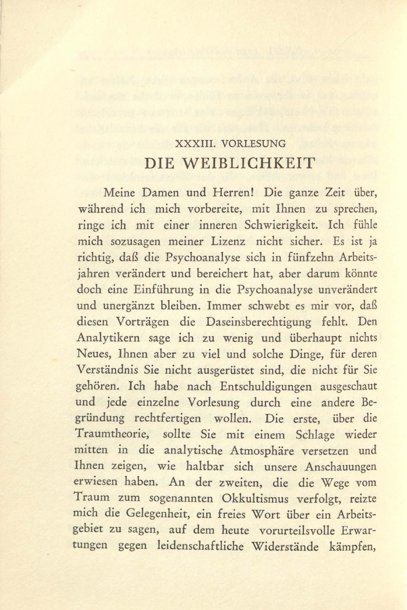
La femminilità (Die Weiblichkeit), lezioneXXXIII della Nuova serie di lezioni di introduzione alla psicoanalisi
Identificazione probabile
Note sul riferimento
Pagina iniziale della lezione XXXIII, facsimile 1933: Internationaler Psychoanalytischer Verlag · 1933 · facsimile IPU · inizio lezione XXXIII
Pagina iniziale autentica della lezione nel volume 1933, dichiarata pagina di apertura e non copertina del volume o libro separato. Il titolo italiano è traduzione descrittiva; nessuna specifica edizione italiana è attribuita al video.
Freud, lezioni sulla femminilità e frase sulla prima distinzione nell’incontro sono riconoscibili: lezione XXXIII, non diagnosi attuale di identità di genere.
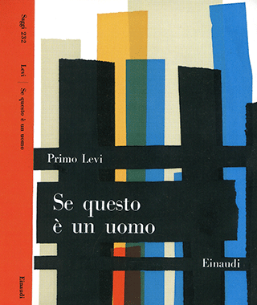
Se questo è un uomo
Note sul riferimento
Copertina: Einaudi · Saggi 232, 1958 · sovraccoperta Bruno Munari
Riproduzione autentica della sovraccoperta dell’edizione Einaudi 1958, conservata e descritta dal Centro Internazionale di Studi Primo Levi. Non è l’edizione De Silva del 1947 né la versione teatrale. Nessun ISBN moderno attribuito retroattivamente.
Primo Levi e Se questo è un uomo sono nominati esplicitamente.

Critica della ragion pratica
Identificazione probabile
Note sul riferimento
Copertina: Bompiani, 2000
Il cielo stellato e la legge morale sono richiamati e poi ripresi: allusione probabile alla conclusione della Critica della ragion pratica, non titolo pronunciato.

Metafisiche del mondo
Note sul riferimento
Copertina: Copertina riprodotta nella recensione di Domenico Conversa
Il relatore cita il proprio volume, reso al singolare dalla trascrizione automatica; il titolo bibliografico è Metafisiche del mondo. L’ISBN della copia non è identificato.
La fabbrica del consenso
Note sul riferimento
Copertina: Il Saggiatore · La fabbrica del consenso
Edizione italiana con sottotitolo La politica e i mass media, traduzione di Stefano Rini. Nessuna edizione attribuita al video.
Manufacturing Consent è esplicito nel discorso sui media e sulla trasformazione del pubblico in prodotto.
The Hedgehog and the Fox: An Essay on Tolstoy’s View of History
Identificazione probabile
Note sul riferimento
Copertina di un’edizione della stessa opera: Princeton University Press, seconda edizione 2013, a cura di Henry Hardy, prefazione Michael Ignatieff, ISBN 9780691156002. Stessa opera, non copia video identificata.
Berlin, frammento di Archiloco sul riccio e la volpe e lettura monismo/pluralismo espliciti a 7956–8016 s; titolo del saggio ricavato per collazione, menzione probabile. Nessuna poesia separata creata dal frammento.
Archiloco, riccio/volpe, Berlin e interpretazione monismo/pluralismo identificano probabilmente il saggio su Tolstoj; nessun nuovo frammento autonomo.
Amici miei
Identificazione probabile
Note sul riferimento
Locandina di Amici miei, film 1975 · repertorio Cinematografo: Locandina di Amici miei, film 1975 · repertorio Cinematografo
Locandina completa del primo film 1975, a risoluzione limitata; non Amici miei–Atto II°, usata come voce distinta. La scena del genio è richiamata come analogia comica.
Amici miei e il pensionato bersaglio degli scherzi: identificazione probabile del primo film del 1975, non Atto II dedotto dal solo titolo.

La banalità del male. Eichmann a Gerusalemme
Identificazione probabile
Note sul riferimento
Copertina: Feltrinelli · Universale Economica Saggi · 2023
Immagine autentica dell’opera, controllata visivamente; l’edizione di riferimento non è attribuita al filmato.
Eichmann a Gerusalemme è nominato nel tema di ordini e responsabilità; richiamo probabile al libro di Hannah Arendt, senza ridurne la ricostruzione processuale alla sola formula dell’obbedienza.

Bartleby lo scrivano
Identificazione probabile
Note sul riferimento
Copertina della raccolta: Bompiani · Bartleby lo scrivano e altri racconti · 2018
Copertina della raccolta Bompiani che contiene Bartleby lo scrivano. Non è presentata come copertina di un’edizione autonoma del racconto né come l’esemplare citato nel video.
Preferirei di no / I prefer not: allusione probabile alla formula di Bartleby, non titolo pronunciato.

Vangelo secondo Giovanni
Identificazione probabile
Note sul riferimento
Copertina del volume completo: San Paolo, 2014 · Nuova Versione dai Testi Antichi · edizione di riferimento
Vangelo secondo Giovanni è un libro della Bibbia. L’immagine mostra il volume completo San Paolo di riferimento, non un’edizione autonoma del singolo libro e non una versione identificata nella citazione.
Il mio regno non è di questo mondo: richiamo probabile a Giovanni 18,36; nessuna nuova opera generica dal solo riferimento cristiano.
Vangelo secondo Matteo
Identificazione probabile
Note sul riferimento
Copertina del volume completo: San Paolo, 2014 · Nuova Versione dai Testi Antichi · edizione di riferimento
Vangelo secondo Matteo è un libro della Bibbia. L’immagine mostra il volume completo San Paolo di riferimento, non un’edizione autonoma del singolo libro e non una versione identificata nella citazione.
Date a Cesare e impossibilità di servire Dio e Mammona: probabile riferimento a Matteo 22,21 e 6,24; paralleli sinottici non trattati come citazioni aggiuntive certe.
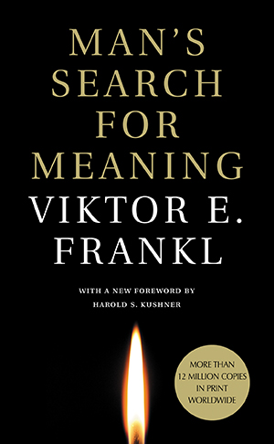
Man’s Search for Meaning (Uno psicologo nei lager)
Identificazione probabile
Note sul riferimento
Copertina: Copertina Beacon Press, 1 giugno 2006, ISBN 9780807014295, prefazione di Harold S. Kushner e postfazione di William J. Winslade. Edizione inglese di riferimento, non la copia o la traduzione ricordata dal relatore; il collegamento al titolo resta probabile.
Immagine autentica dell’opera, controllata visivamente; l’edizione di riferimento non è attribuita al filmato.
Viktor Frankl e il libro sui lager, ricordato attraverso il titolo inglese relativo alla ricerca di senso: il titolo orale approssimativo.

Il mondo nuovo
Identificazione probabile
Note sul riferimento
Copertina della raccolta: Mondadori · Oscar Moderni · 2016
L’immagine mostra il volume Mondadori che riunisce Il mondo nuovo e Ritorno al mondo nuovo. Il collegamento nel video riguarda il primo romanzo, per allusione al titolo inglese; non identifica un’edizione usata dal relatore.
Mondo nuovo e Huxley sono accostati nel discorso sulla cancellazione del passato; probabile allusione al romanzo, non titolo certo di una nuova opera.

Fatherland
Note sul riferimento
Copertina: Arrow, edizione tascabile indicata dall’editore al 1 dicembre 2022, 512 pagine, ISBN 9780099527893. Veste grafica editoriale di riferimento, non attribuita al video.
Copertina autentica Penguin / Arrow: autore Robert Harris, titolo rosso Fatherland, architettura monumentale e insegne del regime nella Berlino immaginaria del romanzo. File verificato e visto integralmente. Il contesto alternativo è narrativo e non modifica la documentazione storica della Shoah.
Robert Harris, Fatherland e l’ucronia di una vittoria nazista sono espliciti; la finzione narrativa resta distinta dalla storia accertata.
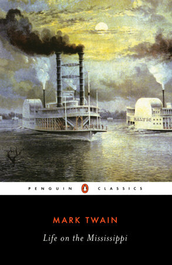
Life on the Mississippi
Identificazione probabile
Note sul riferimento
Copertina: Penguin Classics, 5 febbraio 1985, ISBN 9780140390506; introduzione e note di James M. Cox. Copertina editoriale successiva, non frontespizio 1883 e non edizione identificata nel video.
La data 1985 appartiene a questa edizione; la prima pubblicazione dell’opera è 1883.
Nel passaggio: Mark Twain nominato, sollievo nel rispondere e formula inglese I don’t know; corrispondenza col passo del capitolo VI collazionato in originale. Titolo non pronunciato.
La notte (La Nuit)
Note sul riferimento
Copertina di un’edizione della stessa opera: Giuntina, edizione italiana avviata nel 1980 e ristampe, traduzione Daniel Vogelmann, prefazione François Mauriac, ISBN 9788885943117. Tiratura precisa non identificata nel video.
Titolo e autore espliciti nella chiusa a 9025 s. La lettura cristologica proposta da Dr Divago è un’interpretazione del relatore, non la trasformazione della testimonianza ebraica di Wiesel in un’opera cristiana.
Elie Wiesel e La notte sono espliciti. La lettura cristologica della scena della forca è di Dr Divago; non sostituisce la natura ebraica e testimoniale del testo.